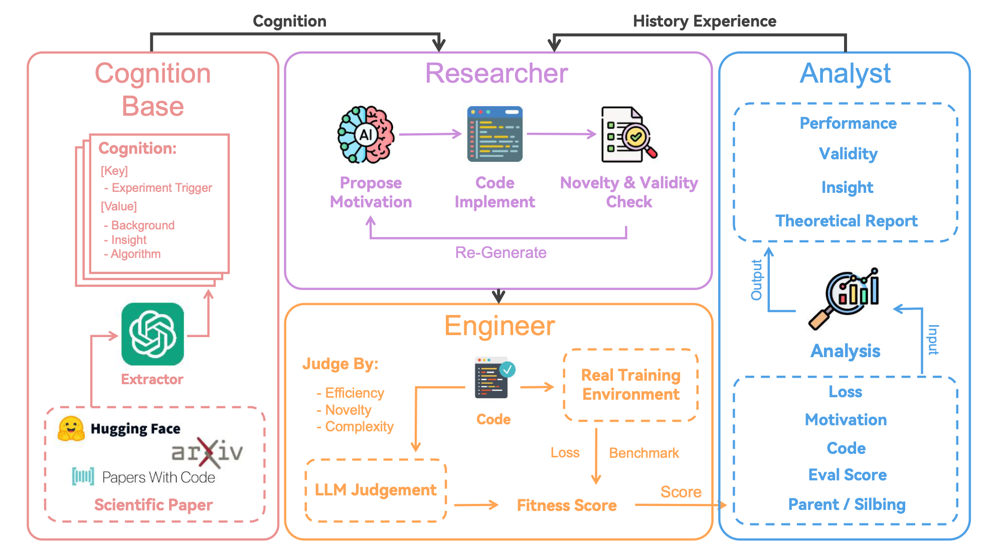
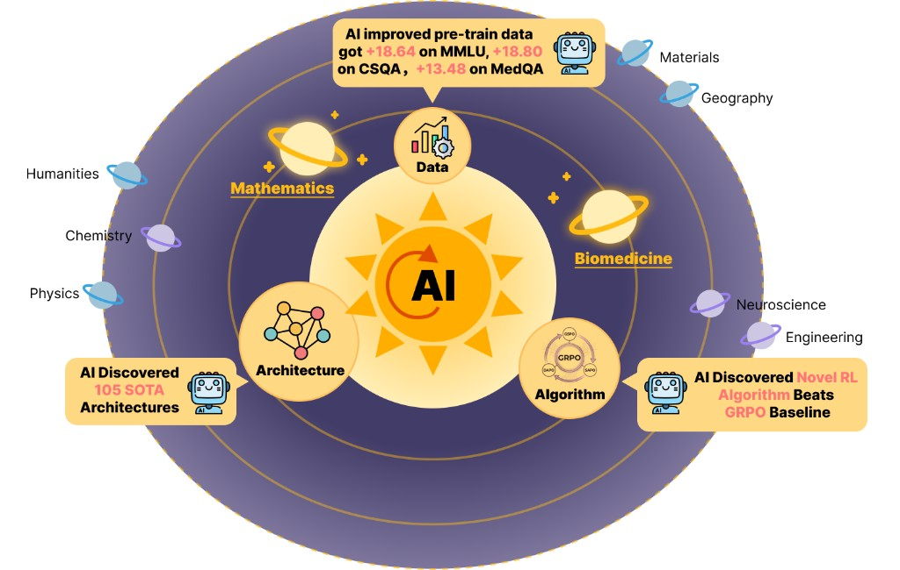

"Ask a question. Run a thousand experiments."
Three Core Features
Transparent
Shows the complete research reasoning process, letting you see every step of the thinking
Local-First
Supports local running, protects privacy, no cloud service dependency
Open Source
Fully open source, community-driven, continuously improving
Architecture Diagram

Core Framework
ASI-Evolve
ASI-Evolve
ASI-Evolve is a general agentic framework that closes the loop between knowledge → hypothesis → experiment → analysis — and repeats it autonomously, round after round, until it finds something that works.
We use ASI-Evolve as the core framework for R U Socrates, which is driven by three agents:
- Researcher - reads the database and cognition store, proposes the next candidate
- Engineer - executes the candidate and collects structured metrics
- Analyzer - distills outcomes into transferable lessons
ASI-Evolve has proven its value in multiple domains, including neural architecture design, pretraining data curation, and RL algorithm design.
Learn more about ASI-EvolveASI Integration
Advanced Synthetic Intelligence
Our platform integrates cutting-edge ASI technology to provide intelligent research capabilities. The ASI component enhances the research process by:
- Automatically generating hypotheses based on existing knowledge
- Optimizing experiment design for maximum information gain
- Analyzing results and extracting actionable insights
- Learning from each experiment to improve future iterations
The ASI system works seamlessly with the ASI-Evolve framework to create a powerful research engine that can tackle complex problems.
Example Code
from asi_evolve import ResearchPipeline
# Initialize the research pipeline
pipeline = ResearchPipeline(
cognition_store="path/to/cognition",
database="path/to/database"
)
# Define your research question
question = "How to optimize LLM serving throughput?"
# Run the research pipeline
results = pipeline.run(
question=question,
steps=50,
sample_n=5
)
# Analyze the results
for result in results:
print(f"Score: {result.score}")
print(f"Code: {result.code[:200]}...")
print(f"Analysis: {result.analysis[:100]}...")
print("---")
Download
Or visit the GitHub Releases page for all available versions